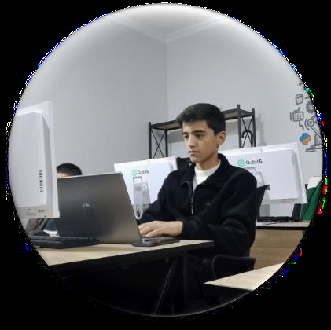

Akademiya Telegram Bot
Iqtidor Academy uchun Aiogram 3.x asosida FSM bilan ishlaydigan, o'quvchi jarayonlarini avtomatlashtiruvchi bot.
Python
Aiogram
PostgreSQL
GitHub'da ko'rish
Python, Django va FastAPI yordamida ishonchli backend tizimlar, PostgreSQL bilan optimallashtirilgan ma'lumotlar bazalari va Aiogram asosida Telegram botlar yarataman.

11-sinf o'quvchisi bo'lsam-da, backend dunyosida real tajriba orttirdim — ishlab chiqarish darajasidagi API'lar va avtomatlashtirilgan botlar ustida ishlayman.
Django va FastAPI'da server mantig'ini ishlab chiqdim, PostgreSQL bilan optimallashtirilgan so'rovlar yozdim va Aiogram orqali akademiya jarayonlarini avtomatlashtiruvchi Telegram botlar yaratdim.
Maktabda o'qish bilan bir vaqtda dasturlashni chuqur o'rganib, nazariyani darhol amaliyotga tatbiq qilaman.
Toza kod, aniq strukturalar va asinxron so'rovlar — har bir loyihada barqarorlik va tezlikni birinchi o'ringa qo'yaman.
O'zbek — ona tili, Rus tilida erkin muloqot, Ingliz tilida texnik matnlarni o'qish va yozish darajasida.
Backend, ma'lumotlar bazasi va kundalik ish vositalari.
Maktab ta'limi bilan bir qatorda dasturlash sohasini mustaqil chuqurlashtirib o'rganmoqdaman.
Ko'proq loyihalar GitHub profilimda joylashgan.
Iqtidor Academy uchun Aiogram 3.x asosida FSM bilan ishlaydigan, o'quvchi jarayonlarini avtomatlashtiruvchi bot.
JWT autentifikatsiya, Pydantic validatsiya va PostgreSQL bilan ishlaydigan, to'liq hujjatlashtirilgan (Swagger) backend xizmati.
Ma'lumotlarni boshqarish uchun Django asosidagi ichki panel — optimallashtirilgan so'rovlar va toza CRUD tuzilmasi bilan.
Xabar yuboring — imkon qadar tez javob beraman.
📞 +998 (97) 904-18-20
📍 Toshkent, O'zbekiston